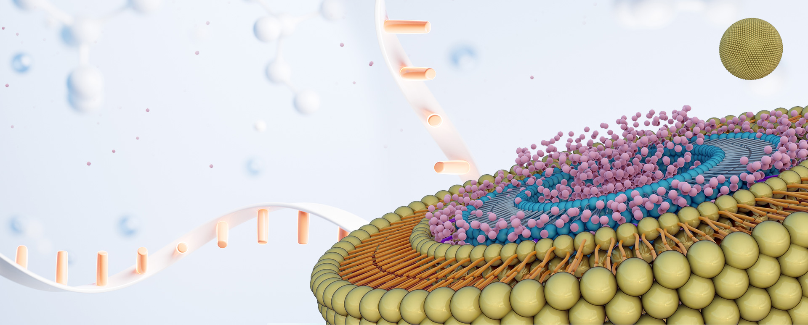

bw_0003 · 细胞膜结构示意图
模型实际输入详情 · 两个模型的 inputs 文件逐字节一致，已核验。
原始题目全文
以下逐字展示 query.txt，保留原文语言；这是任务要求，并非生成结果或评分标准。
I'm writing a paper on cell-membrane structure and need a clean educational illustration for the manuscript. Use the reference image as a visual and compositional reference, but treat the result as a qualitative schematic rather than a quantitative molecular model or experimental reconstruction. The centerpiece is an upward-bulging, curved phospholipid bilayer. Build two dense membrane faces from rows of spherical hydrophilic heads, with paired hydrophobic tails pointing inward between them. Use olive/yellow-green for the heads and warm orange-brown for the tails to create a clear, continuous bilayer structure. Embed one blue membrane-protein complex in the membrane, with a faintly visible helical or tube-bundle interior. Attach several clearly identifiable pinkish-purple glycoprotein clusters to the membrane surface. In the background, include one cream-backboned DNA double helix with orange-pink base pairs floating diagonally into the frame, several translucent light-blue small-molecule clusters, and one golden nanoparticle sphere with a subtly pitted granular surface. Do not add other molecular structures that are not listed above. Use standard textbook topology for the membrane, protein complex, glycoprotein clusters and DNA. Choose relative sizes and counts only to keep the composition clear and well balanced; these dimensions and counts are illustrative and must not be presented as measured biological values.The main priorities are clear structure and material separation. Use glossy, plasticky materials with mild subsurface scattering for the membrane heads and glycoprotein clusters, a semi-transparent glass-like material for the membrane protein, and a soft matte material for the DNA. Use a bright, clean, cool light-blue gradient background with a large soft key light and a subtle rim light. Frame the membrane as the visual focus with a close-up macro camera and slight depth of field, but keep the bilayer, protein complex, glycoprotein clusters and DNA legible for later callouts. Render one high-resolution image in Cycles and keep the Blender project file so I can add annotations and adjust the camera later. The final image should be presented as a qualitative educational schematic, with clarity and biological readability prioritized over photorealistic detail.下载 query.txt
原始参考素材

任务附件
本题没有额外附件。
本次运行附加的执行指令
这是自建 harness 传给两模型的共同执行指令，不属于原始题目。CPU 设置与个别原题 GPU 要求之间的差异，详见主页说明。
Complete the Blender creation task in /workspace/inputs/query.txt using all declared references and attachments in /workspace/inputs/input.json. Read the reference images with Read; for video, extract and inspect frames with ffmpeg and Read. Blender 4.2.10 is available as `blender` or /runtime/blender/blender. Python with Pillow/NumPy is available as `python`. You can write and run bpy scripts with background Blender. This machine uses CPU Cycles; use 8 threads, and inspect your renders before finishing. You have an 8-hour time budget. Fulfil the original requested deliverables, including animations and resolutions where specified. Save the editable primary project to /workspace/exports/final.blend, with requested images/videos and all texture dependencies inside /workspace/exports using relative paths or packed assets. Put temporary scripts and previews under /workspace/work. Do not finish while required rendering jobs are still running. Use only the provided task inputs, your tools, and your own creation work; evaluation is separate.
完整输入文件
| 文件（点击下载） | 大小 |
|---|---|
| input.json | 164 B |
| instruction.html | 466,354 B |
| query.txt | 2,308 B |
| reference_images.base64.json | 461,676 B |
| references/image_01.jpg | 345,941 B |

查看 input.json 文件清单
{
"task_id": "bw_0003",
"query_file": "query.txt",
"files": [
"references/image_01.jpg",
"instruction.html",
"reference_images.base64.json"
]
}
instruction.html 和 reference_images.base64.json 为输入目录内的原始文件，已保留供下载。本页不包含评测 rubric 或模型产物。